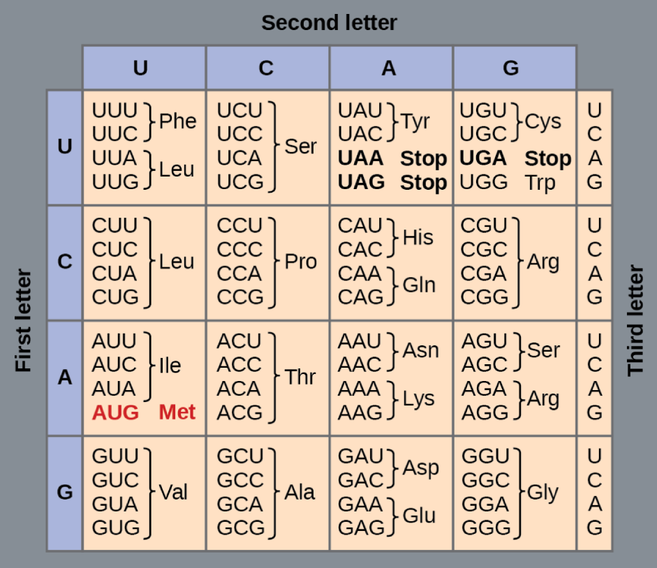
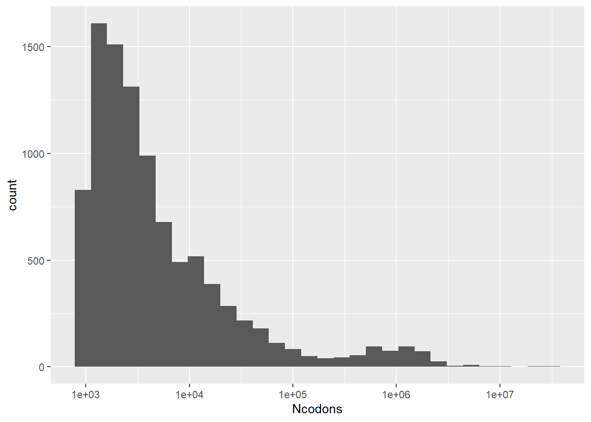

Codons are vital to our understanding of amino acids and protein production within living organisms. The codons used for certain proteins vary in both prescence and frequency between different organisms and, on a larger scale, between taxa. By analyzing and predicting the relationship between codon frequency and the organization of different organisms, insights can be formed about how codons differ between groups and what changes might have occurred throughout evolutionary history in terms of genetic variation and protein building.
Introduction
A codon is a collection of 3 nucleotides (A, C, G, or U for RNA) within a genetic sequence. Different codons call for the production of amino acids which build proteins. The order of codons determine the order of amino acid production and subsequently the form and function of the resulting protein. There are 64 different combinations possible with 4 nucleotides in 3 positions, but there are only around 20 amino acids that are commonly produced from these combinations.

Many codons, especially those with the same nucleotides in the first or second position, will produce the same amino acid.
The data set features 11 different groups titled kingdoms: archaea (arc), bacteria (bct), invertbrates (inv), mammals (mam), bacteriophages (phg), plasmid (plm), plants (pln), primates (pri), rodents (rod), viruses (vrl), and vertebrates (vrt). Note that these categories don’t represent actual kingdoms, of which there are only 7. Groups like primates and rodents are orders and are included within both mammals and vertebrates. Similarly, bacteriophages are a type of virus and thus would typically be classified as such. It seems like Kingdom as a category is simply used to describe large groups that species are classified by rather than actual biological kingdoms.
`stat_bin()` using `bins = 30`. Pick better value with `binwidth`.

Since there are 64 different codons within the data, I isolated a few to serve as examples for distribution. These are UUU, CGU, AUG, and UAG. AUG and UAG are of particular interest because they are start and stop codons, respectively. AUG indicates the beginning of a protein-making sequence while UAG ends the process of translating RNA to call for amino acids.